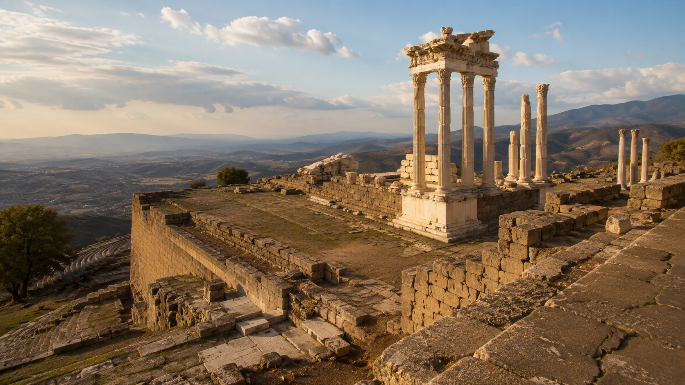
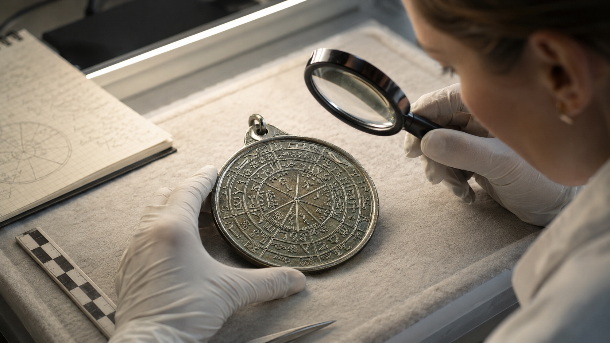
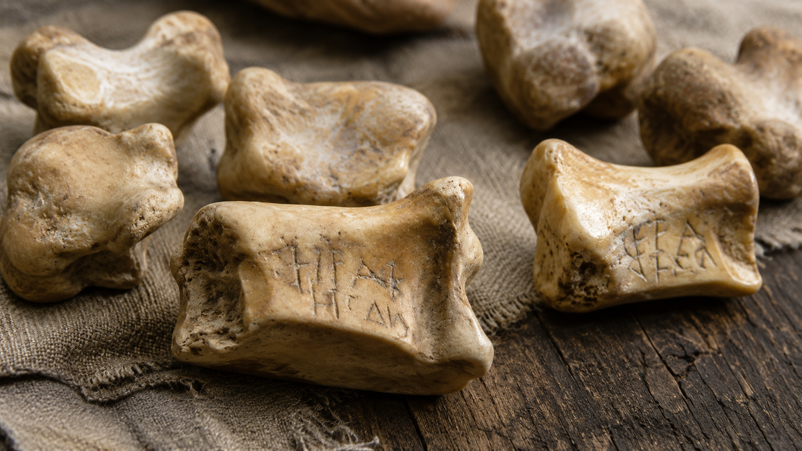
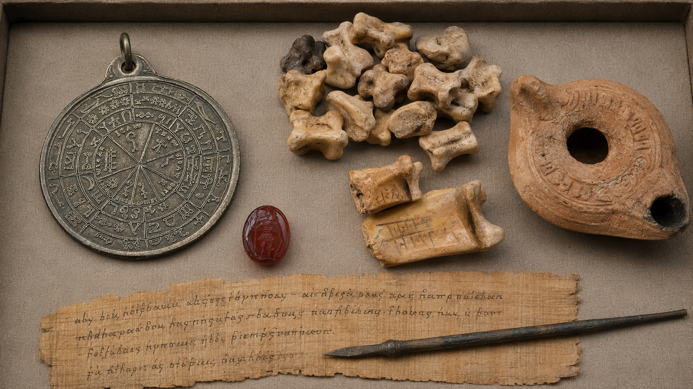
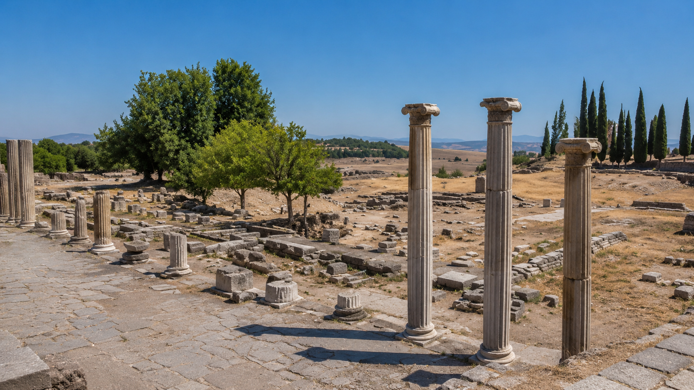
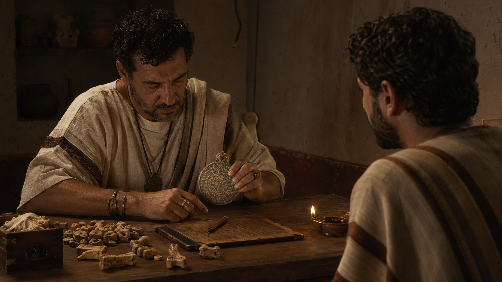

Introduction: A Disc for Speaking with the Invisible
Among the strange survivals of antiquity, few objects feel as uncanny as the so-called Prognostikon, often described as the Divining Disc of Pergamon. It belongs to that shadowed category of ancient instruments that stand somewhere between artifact, ritual machine, magical diagram, and philosophical statement. It is not merely interesting because it may have been used for divination. It is interesting because it reveals an entire way of seeing reality: a world in which the future was not silent, chance was not meaningless, and symbols were not decorations but living thresholds.
The original article rightly presents the Prognostikon as a sacred technology of fate, a device that combined symbols, numbers, ritual procedure, and divine inquiry into one instrument. But to make the subject stronger, we must sharpen the historical frame: the object is not simply a fortune-telling disc. It is better understood as part of a broader Pergamene divination kit, a late-antique magical apparatus discussed by scholars under the German term Zaubergerat, or magical device. Richard Gordon notes that the Pergamon material was first published by Richard Wunsch and later reopened for scholarly debate by Attilio Mastrocinque, especially in relation to possible theurgic divination.
The Prognostikon fascinates because it sits at the crossroads of four worlds: Greek oracle culture, Hellenistic astrology, ritual magic, and philosophical cosmology. It is a bronze witness to a time when the cosmos was believed to be readable, not metaphorically, but operationally. To consult such a device was to enter a symbolic architecture in which letters, gods, stars, numbers, and chance converged into a single question: what is the hidden pattern behind what is about to happen?
Pergamon: The City Where Knowledge Became Sacred Power
To understand the Prognostikon, one must first understand Pergamon.
Pergamon, located in western Asia Minor near modern Bergama in Turkey, was one of the great Hellenistic and Roman centers of the ancient world. UNESCO describes its acropolis as the capital of the Attalid dynasty and a major center of learning, with monumental temples, theatres, stoas, a gymnasium, an altar, and a library built into the dramatic slope of the city. Later, under Roman rule, Pergamon became associated with its famous Asclepieion, a healing sanctuary of considerable importance.
This matters because Pergamon was not an ordinary city. It was a city of books, medicine, gods, dreams, imperial cult, philosophy, healing, and ritual knowledge. Its intellectual life rivaled the atmosphere of Alexandria. Its sacred geography bound together temple, library, theatre, palace, sanctuary, and underworld-like healing spaces. It was a place where the written word, the spoken oracle, the dream image, and the ritual diagram could all be seen as legitimate routes toward hidden truth.
The Asclepieion of Pergamon is especially important for this atmosphere. Asclepieia were healing sanctuaries where religion, medicine, dream incubation, ritual purification, and therapeutic practice met. Pergamon's Asclepieion reached major prominence in the Roman period and was connected with Galen, the famous physician born in Pergamon in 129 CE. In such a setting, divination was not an irrational intrusion into knowledge. It was part of a wider culture of diagnosis: diagnosis of the body, the soul, the dream, the omen, the stars, and the future.
Pergamon was therefore the perfect birthplace, or at least the perfect home, for a device like the Prognostikon: a city where knowledge was never merely intellectual. Knowledge was curative, ritual, political, celestial, and magical.

What Was the Prognostikon?
The word Prognostikon comes from the Greek idea of prognosis: foreknowledge, knowledge beforehand, the ability to perceive what has not yet fully appeared. In later medical language, prognosis concerns the likely course of an illness. In a divinatory context, it concerns the likely course of fate.
The object commonly called the Divining Disc of Pergamon is usually described as a bronze magical or divinatory disc. Popular descriptions often say it was found in Asia Minor in 1899 and preserved in Berlin, though the precise interpretation of the object remains debated. One modern summary describes it as a bronze amulet-like object bearing a mixture of Greek letters, Egyptian hieroglyphic-looking signs, planetary symbols, and other magical characters.
But we must be careful: the exact procedure by which the object was used is not fully known. The strongest scholarly approach is not to pretend certainty, but to place the object within the wider evidence for ancient technical divination. Mastrocinque connects the Pergamon divination kit with Greek magic in late antiquity and possible theurgic use, while Gordon cautions that the precise function and ritual context remain open to interpretation.
So what can we responsibly say?
The Prognostikon was likely not just a passive symbol. It appears to have belonged to a class of ritual instruments meant to produce or mediate an oracle. It may have worked through a combination of inscription, circular arrangement, ritual handling, lot selection, pointer movement, or interpretive correspondence. It was a machine of meaningful selection: a sacred interface between the questioner and the hidden order of the cosmos.
In modern language, we might call it an analog oracle. In ancient language, it would have been something more dangerous and more holy: a crafted threshold through which divine or daimonic intelligence might answer.

The Ancient Logic of Chance: Why Randomness Was Not Random
Modern people often treat divination as either superstition or psychology. Ancient people saw it differently. For many Greeks and Romans, what we call randomness was not necessarily meaningless. A lot drawn, a bone cast, a dream received, a bird's flight observed, or a name generated through ritual could reveal a concealed dimension of order.
This is the logic of cleromancy, divination by lots. Cleromancy was widespread in the ancient Mediterranean. Astragali, knucklebones used like dice, were employed in divinatory procedures, and scholars have connected such practices with oracle systems at places such as Didyma and elsewhere.
The key idea is simple but profound: the divine can speak through the event that escapes human control.
That is why casting lots was not necessarily seen as leaving things to chance. It was almost the opposite. It was a way of removing the ego from the decision so that a deeper order could appear. The diviner did not impose the answer. The mechanism produced the sign. The interpreter then unfolded its meaning.
The Prognostikon belongs to this world of sacred randomness. Its power was not simply in the bronze itself, but in the belief that a properly consecrated symbolic system could turn uncertainty into revelation.

A Bronze Cosmogram: The Disc as Miniature Universe
The circular form of the Prognostikon is not incidental. In ancient cosmology, the circle suggested perfection, recurrence, celestial motion, eternity, enclosure, and the wheel of fate. A divining disc was therefore more than a convenient surface. It was a cosmogram: a model of the universe reduced to a ritual diagram.
A circle can gather opposites without breaking: center and circumference, above and below, beginning and end, motion and stillness. The user standing before such a disc was not merely looking at an object. He or she was confronting a symbolic universe in miniature.
If the disc contained letters, divine names, planetary signs, voces magicae, or numerical arrangements, each would have carried a different kind of force. Letters were not dead marks. In magical and theurgic contexts, letters could function as sounds of power, seals of divine presence, or fragments of cosmic language. Planetary symbols would connect the device to fate, time, and astral influence. Egyptianizing signs would draw upon the prestige of ancient Egyptian sacred science. Greek inscriptions would root the device in the intellectual and ritual language of the eastern Mediterranean.
The result was not a random collage. It was an attempt to make a working diagram of correspondence.

Pergamon and the Fusion of Traditions
One of the most compelling aspects of the Prognostikon is its apparent mixture of traditions. The ancient Mediterranean was not spiritually isolated. Greek, Egyptian, Anatolian, Jewish, Syrian, Persian, and Roman currents constantly crossed, blended, and reappeared in new forms.
Late-antique magical objects frequently bear this hybrid quality. They might invoke Greek gods, Egyptian gods, Hebrew divine names, planetary powers, angelic or daimonic beings, and mysterious sound formulas in the same ritual field. This was not confusion. It was a deliberate accumulation of sacred authority.
The magician or ritual specialist did not necessarily think in the rigid categories modern scholars use. A sign was valuable if it worked, if it carried divine prestige, if it resonated with a known power, or if it participated in a chain of correspondences. In such an environment, the Prognostikon becomes a bronze archive of religious exchange.
Pergamon itself stood at a crossroads between Europe and the Near East, and UNESCO emphasizes its role as an important cultural, scientific, and political center in the ancient world. The disc reflects that same crossroads quality. It is Greek and more-than-Greek. It is local and cosmopolitan. It belongs to Pergamon, but its symbolic vocabulary reaches far beyond Pergamon.

Technical Divination: When Ritual Became Procedure
The Prognostikon is especially interesting because it seems to belong to what we might call technical divination.
Ancient divination was not always ecstatic prophecy. It was not always the inspired priestess, the dream from a god, or the sudden omen in the sky. Sometimes it involved method. It involved tools, diagrams, tables, lots, lamps, mirrors, bowls, alphabets, numbers, and carefully structured procedures.
A Cambridge discussion of ancient Greek technical divination notes that methods such as astragalomancy and catoptromancy involved forms of human technical knowledge and reflected theological assumptions about how gods intervened in the human realm. This is precisely the kind of intellectual world in which the Prognostikon makes sense.
The device likely required more than belief. It required correct use. The question had to be prepared. The ritual space had to be arranged. The divine or daimonic powers had to be addressed. The symbolic result had to be interpreted. In this sense, the Prognostikon was not merely an object. It was part of a ritual protocol.
This makes it strangely modern.
Like a machine, it had an input: the question.
Like an algorithm, it had a procedure: the method of selection.
Like a database, it had a field of possible symbolic answers.
Like an oracle, it returned a result that required interpretation.
But unlike modern machines, its authority came not from computation alone. It came from the belief that the cosmos itself was intelligent.

The Question as Key
In ancient divination, the question was not a casual thing. A vague question could produce a vague oracle. A manipulative question could offend the divine. A poorly timed question could miss the current of fate.
The question had to be ritually and intellectually shaped.
This is one of the most overlooked aspects of ancient oracle culture. Divination was not only about receiving answers. It was also about learning how to ask. The seeker had to compress fear, desire, uncertainty, and circumstance into a form the invisible world could answer.
Should I travel?
Will the illness improve?
Is the marriage favorable?
Will the business succeed?
Is the god angry?
Is the dream true?
Is the omen dangerous?
Questions like these were not abstractions. They emerged from real human anxiety. The Prognostikon was not a toy for curiosity. It was likely consulted at thresholds, moments when ordinary judgment was insufficient and the seeker desired orientation from a higher order.
This gives the object emotional force. Behind the bronze disc stood living people: the sick, the ambitious, the frightened, the lovesick, the politically endangered, the spiritually uncertain. The disc was a place where human vulnerability met cosmic structure.
Fate, Providence, and the Ancient Future
The Prognostikon also raises a deeper philosophical question: what did the ancient user believe the future actually was?
It is tempting to imagine ancient divination as crude fatalism. But the reality is more subtle. Greek and Roman thinkers debated fate, providence, necessity, chance, divine foreknowledge, and human freedom. Stoics imagined a cosmos ordered by Logos, a rational divine principle permeating all events. Platonists and later Neoplatonists distinguished visible appearances from invisible causes. Theurgists sought not merely to know divine things, but to participate in divine order.
Within such a framework, divination did not always mean the future is fixed. It could mean that the future has tendencies, currents, pressures, and signatures. The oracle revealed the pattern, but the human being still had to respond.
A good divination did not eliminate responsibility. It intensified it.
To receive an oracle was to become answerable to knowledge.
Theurgic Possibilities: Was the Disc Used to Contact Divine Powers?
One of the most intriguing scholarly discussions around the Pergamon material concerns the possibility that it was connected not merely with ordinary fortune-telling but with theurgic divination.
Theurgy, especially in late antique Platonism, involved ritual acts intended to align the soul with divine powers. Unlike simple magic aimed at practical results, theurgy could be understood as a sacred art of ascent, purification, and divine participation. Mastrocinque's study explicitly considers the Pergamon divination kit in relation to Greek magic and theurgy in late antiquity.
This does not mean we can confidently declare the Prognostikon a theurgic machine. Gordon's caution is important: the relationship between the Pergamon objects, literary descriptions, and actual ritual practice remains debated. But the possibility is powerful.
If the disc belonged to a theurgic context, then its purpose may not have been merely to answer practical questions. It may have been used to bring the operator into contact with divine, daimonic, or planetary intelligences. Its symbols may have functioned as stations of ascent, gates of invocation, or coordinates within a sacred cosmos.
In that case, the Prognostikon was not just a device for predicting fate. It was a device for entering the invisible hierarchy behind fate.
The Disc and the Magical Papyri
The Prognostikon also belongs intellectually beside the world of the Greek Magical Papyri, a body of ritual texts preserving spells, invocations, prayers, recipes, diagrams, voces magicae, and instructions for contacting gods and daimones. These texts frequently combine Greek, Egyptian, Jewish, and other religious elements in ways similar to the hybrid symbolism associated with magical objects.
Scholars studying ancient magical instruments have often used the papyri to interpret archaeological objects such as gems, lamps, figurines, rings, and inscribed tablets. One study notes that the papyri include instructions for ritual objects such as rings, gems, lanyards, wax figures, cups, lamps, and inscribed tablets, while archaeology preserves some comparable objects.
This is important because ritual tools were often made from perishable materials: wood, wax, cloth, plant matter, or papyrus. Many have vanished. A bronze disc survives precisely because bronze endures. It may be only one remnant of a larger ritual ecosystem.
The Prognostikon may therefore represent the visible tip of an invisible practice.
The Disc as an Ancient Interface
One of the most useful modern analogies is the idea of an interface.
An interface allows two different orders of reality to communicate: human and machine, user and system, visible input and hidden process. The Prognostikon may have served a similar function between the human seeker and the unseen order.
The user brought a question.
The ritual established contact.
The device structured possibility.
The sign emerged.
The interpreter translated.
This is not unlike the way later systems such as the I Ching, geomancy, tarot, and astrological charts operate. They do not merely predict. They create a symbolic field in which hidden relations can become visible.
The difference is that in antiquity this process was not usually framed as psychology. It was framed as cosmology. The answer did not arise from the subconscious alone. It came from the living order of gods, stars, daimones, numbers, and fate.
The Sacred Technology of Meaning
The Prognostikon challenges the modern definition of technology.
We usually think of technology as a tool that manipulates matter, stores data, or performs calculation. But ancient sacred technologies operated differently. They manipulated attention, symbol, ritual sequence, and cosmological alignment.
A temple is a technology of sacred space.
A hymn is a technology of invocation.
An oracle is a technology of divine response.
A talisman is a technology of concentrated correspondence.
A divining disc is a technology of meaningful chance.
The Prognostikon did not need electricity to function. Its power lay in the convergence of crafted material, symbolic order, ritual authority, and interpretive intelligence. It was a machine made not for industry, but for destiny.
This is why the object still fascinates. It reminds us that ancient people did not lack sophistication. They possessed a different sophistication, one aimed at invisible causes rather than visible mechanisms.
Why the Prognostikon Still Matters
The modern world has not abandoned oracles. It has only renamed them.
We consult algorithms, markets, forecasts, risk models, medical scans, personality systems, political polls, AI predictions, and data dashboards. We still seek patterns that will tell us what is coming. We still transform uncertainty into symbols. We still ask machines to mediate between the unknown and the decision.
The difference is that modern culture usually strips the sacred from the process.
The Prognostikon forces us to confront a different possibility: that prediction was once inseparable from reverence. To ask about the future was to admit that the human being was not sovereign over time. It was to stand before a pattern larger than oneself.
This does not mean we must believe exactly what ancient diviners believed. But it does mean we can recognize the depth of the ancient act. Divination was not only about curiosity. It was about orientation. It was about finding one's place inside a cosmos believed to be alive with intelligence.
Conclusion: The Wheel That Listened
The Prognostikon of Pergamon remains mysterious because it is more than an artifact. It is a fragment of a lost ritual grammar.
It comes from a world where Pergamon's libraries, temples, healing sanctuaries, philosophers, physicians, magicians, and diviners all participated in a broader search for hidden order. In that world, the future was not an empty space waiting to happen. It was a veiled pattern, already trembling with signs.
Whether the disc was used for cleromancy, theurgic inquiry, planetary divination, magical consultation, or some combination of these, its deeper meaning is clear. It embodied the ancient conviction that reality could answer back.
The Prognostikon was a bronze circle, but also a symbolic cosmos. It was an instrument, but also a threshold. It was a tool, but also a theology.
In its silent inscriptions we glimpse the ancient dream of a universe that speaks: not always in thunder, prophecy, or miracle, but through signs, numbers, letters, lots, and the subtle machinery of meaningful chance.
The Divining Disc of Pergamon is therefore not merely a relic of ancient superstition. It is one of the most haunting emblems of humanity's oldest metaphysical desire: to stand at the edge of uncertainty, ask a question with the whole soul, and receive from the invisible world a sign.